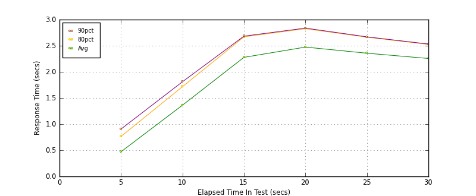
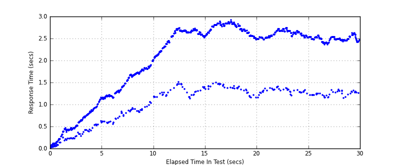
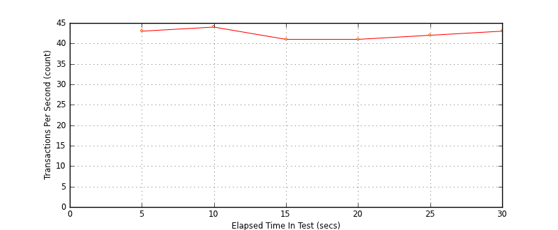
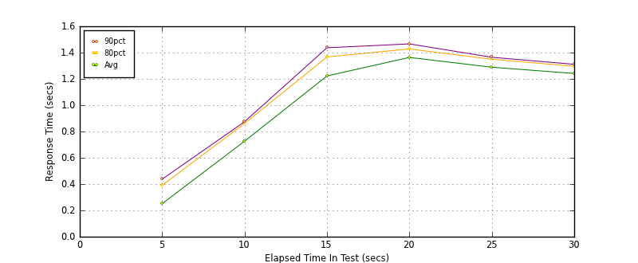
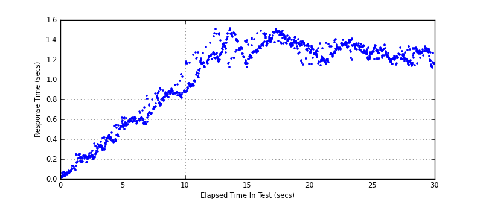
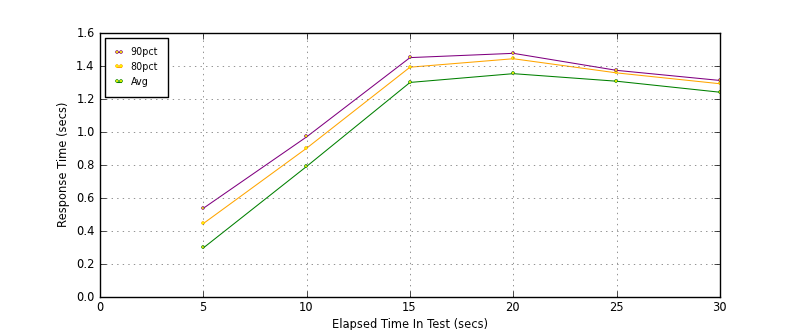
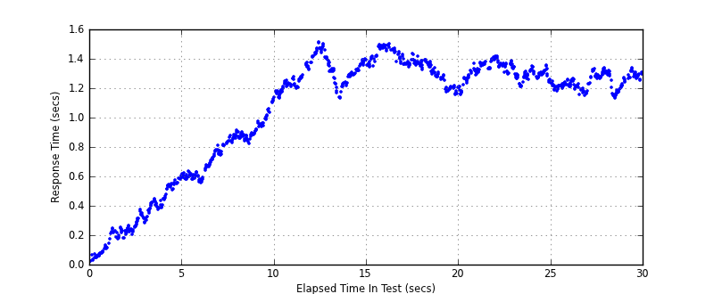
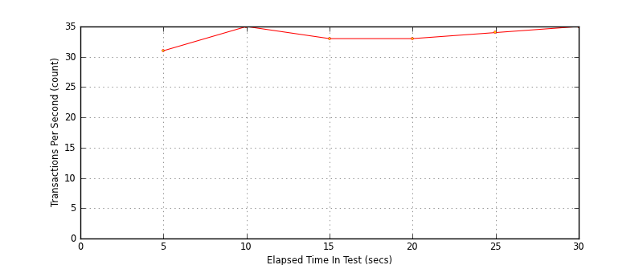

Performance Results Report
Summary
transactions: 1382
errors: 1117
run time: 30 secs
rampup: 10 secs
test start: 2014-01-15 14:45:45
test finish: 2014-01-15 14:46:15
time-series interval: 5 secs
workload configuration:
| group name | threads | script name |
|---|
| user_group-1 | 10 | read_user.py |
| user_group-2 | 90 | readwrite_user.py |
All Transactions
Transaction Response Summary (secs)
| count | min | avg | 80pct | 90pct | 95pct | max | stdev |
|---|
| 1382 | 0.012 | 1.857 | 2.632 | 2.704 | 2.786 | 2.914 | 0.857 |
Interval Details (secs)
| interval | count | rate | min | avg | 80pct | 90pct | 95pct | max | stdev |
|---|
| 1 | 215 | 43.00 | 0.012 | 0.471 | 0.764 | 0.905 | 0.995 | 1.150 | 0.300 |
| 2 | 223 | 44.60 | 0.554 | 1.362 | 1.716 | 1.811 | 1.859 | 2.005 | 0.381 |
| 3 | 207 | 41.40 | 1.127 | 2.278 | 2.670 | 2.683 | 2.705 | 2.736 | 0.516 |
| 4 | 205 | 41.00 | 1.149 | 2.474 | 2.826 | 2.837 | 2.858 | 2.914 | 0.539 |
| 5 | 213 | 42.60 | 1.154 | 2.357 | 2.663 | 2.670 | 2.709 | 2.735 | 0.504 |
| 6 | 219 | 43.80 | 1.141 | 2.256 | 2.525 | 2.532 | 2.575 | 2.619 | 0.484 |
Graphs
Response Time: 5 sec time-series

Response Time: raw data (all points)

Throughput: 5 sec time-series

Custom Timer: get_tweets
Timer Summary (secs)
| count | min | avg | 80pct | 90pct | 95pct | max | stdev |
|---|
| 1282 | 0.011 | 1.010 | 1.336 | 1.383 | 1.428 | 1.509 | 0.416 |
Interval Details (secs)
| interval | count | rate | min | avg | 80pct | 90pct | 95pct | max | stdev |
|---|
| 1 | 215 | 43.00 | 0.011 | 0.251 | 0.391 | 0.437 | 0.525 | 0.615 | 0.149 |
| 2 | 223 | 44.60 | 0.500 | 0.726 | 0.861 | 0.875 | 0.892 | 1.052 | 0.133 |
| 3 | 207 | 41.40 | 0.882 | 1.222 | 1.367 | 1.437 | 1.462 | 1.509 | 0.158 |
| 4 | 205 | 41.00 | 1.149 | 1.363 | 1.428 | 1.466 | 1.479 | 1.504 | 0.076 |
| 5 | 213 | 42.60 | 1.141 | 1.289 | 1.349 | 1.365 | 1.385 | 1.410 | 0.063 |
| 6 | 219 | 43.80 | 1.121 | 1.241 | 1.296 | 1.311 | 1.320 | 1.349 | 0.055 |
Graphs
Response Time: 5 sec time-series

Response Time: raw data (all points)

Throughput: 5 sec time-series
Custom Timer: post_tweet
Timer Summary (secs)
| count | min | avg | 80pct | 90pct | 95pct | max | stdev |
|---|
| 1027 | 0.020 | 1.056 | 1.351 | 1.388 | 1.441 | 1.513 | 0.393 |
Interval Details (secs)
| interval | count | rate | min | avg | 80pct | 90pct | 95pct | max | stdev |
|---|
| 1 | 159 | 31.80 | 0.020 | 0.297 | 0.445 | 0.538 | 0.556 | 0.614 | 0.160 |
| 2 | 179 | 35.80 | 0.555 | 0.792 | 0.902 | 0.971 | 1.052 | 1.134 | 0.150 |
| 3 | 169 | 33.80 | 1.130 | 1.300 | 1.393 | 1.451 | 1.471 | 1.513 | 0.097 |
| 4 | 168 | 33.60 | 1.154 | 1.354 | 1.444 | 1.477 | 1.487 | 1.503 | 0.093 |
| 5 | 173 | 34.60 | 1.153 | 1.308 | 1.358 | 1.374 | 1.388 | 1.416 | 0.054 |
| 6 | 179 | 35.80 | 1.131 | 1.241 | 1.292 | 1.312 | 1.321 | 1.338 | 0.051 |
Graphs
Response Time: 5 sec time-series

Response Time: raw data (all points)

Throughput: 5 sec time-series
